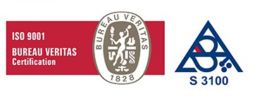
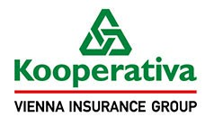

Tři specializované společnosti, jedno silné zázemí
Skupina CT Project sdružuje stavební kapacity pro Českou republiku i Slovensko a vlastní servisní zázemí těžké vrtné mechanizace:
- CT Project s. r. o. (Česká republika) – Speciální zakládání staveb, hlubinné piloty, záporové stěny, mikropiloty, Brno – Slatina.
- CT Project Slovakia s. r. o. (Slovenská republika) – Realizace dopravních a pozemních geotechnických děl po celém Slovensku, Bratislava.
- CT Project servisní s.r.o. – Technická údržba, servis a pronájem vrtných souprav BAUER, KLEMM a injekčních soustrojí METAX.
Koncept Design & Build
Vlastní těžká mechanizace
Autorizace ČKAIT geotechnika
Certifikace norem ČSN EN
Certifikace a garance jakosti
Práce provádíme ve striktním souladu s evropskými normami ČSN EN 1536, 14199, 12716, 1537 a 14490 pod dohledem autorizovaných inženýrů.

Systém managementu jakosti ISO 9001 / 14001

Pojistné krytí stavebních rizik u pojišťovny Kooperativa